最近把家里闲置的一台笔记本装了群晖，并且利用上次再良心云买的域名，添加了外网访问。此博文为记。
安装群晖
总体来说用笔记本来安装黑群晖还是比较简单的。具体参考张大妈上的这篇文章。
需要注意的是，本来笔记本是ssd和机械硬盘组的双硬盘，安装好群晖之后，发现只能识别到ssd，无法识别机械硬盘。想着ssd用来做硬盘有点浪费，所以我将笔记本的ssd拆下来，又重新安装了一遍，这才识别了机械硬盘。
安装完之后出现登录界面还是有点小激动的。
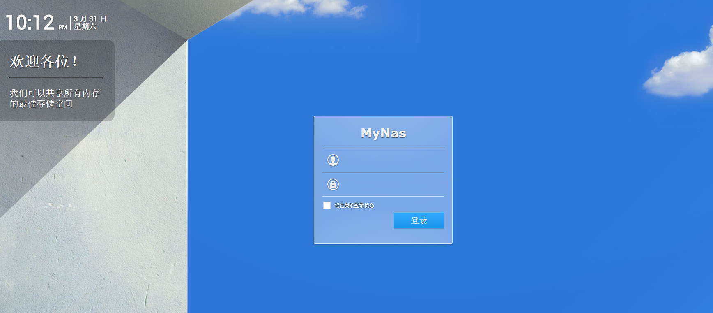
建立外网访问
安装完之后，建立外网访问。建立外网访问需要具备几个条件。
- 拥有外网IP，家里办的联通的宽带，是有公网IP的
- 拥有自有域名，这个可以购买，我是再腾讯云买的域名
- DNSPOD账号，免费注册，现在已经被腾讯收购了。腾讯云买的域名默认DNS服务器就是DNSPOD免费服务器。
添加DNS解析记录
登录到DNSPOD，再域名下添加一条解析记录。主机记录填上你想要的二级域名，记录值可以随便填一个IP地址(后面会通过脚本来自动修改该值)
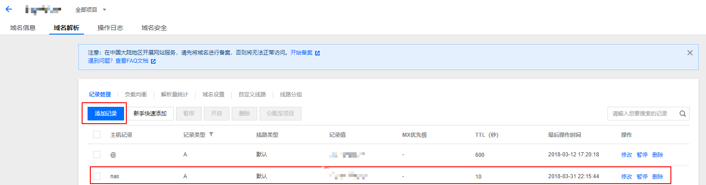
然后需要获取这条记录的ID值，按F12打开浏览器开发者工具，选择记录前面的勾选框，然后再html源码中找到value值，即为这条记录的ID值，后续我们需要通过这个ID值来定期修改IP地址。
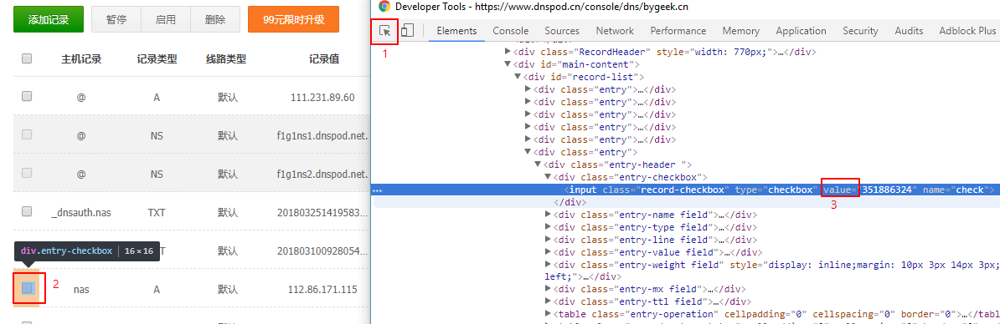
创建API Token
再DNSPOD左侧面板中选择安全设置，然后创建API Token，得到API Token ID和Token值。
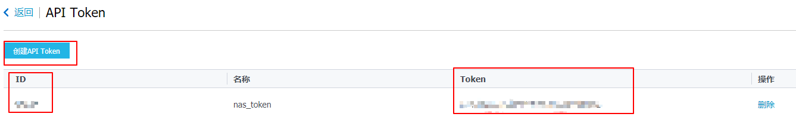
建立计划任务
将安装好群晖的笔记本通过千兆有线连接到路由器中。然后再主控机中打开Synology Assist。查找局域网内的群晖，可以看到DHCP后的IP地址。

打开浏览器输入URL: 10.0.0.10:5000，以默认的admin用户登陆。然后再控制面板中找到计划任务。新建计划任务，再用户自定义脚本中填入以下脚本（注意替换），并且设置15分钟执行一次：
1 | curl -X POST https://dnsapi.cn/Record.Ddns -d 'login_token=ApiToken数字ID,ApiToken密钥&format=json&domain=你的域名&record_id=记录的ID&record_line=默认&sub_domain=域名的前缀 |
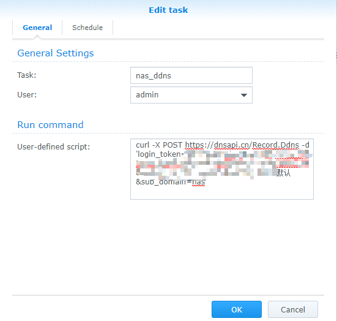
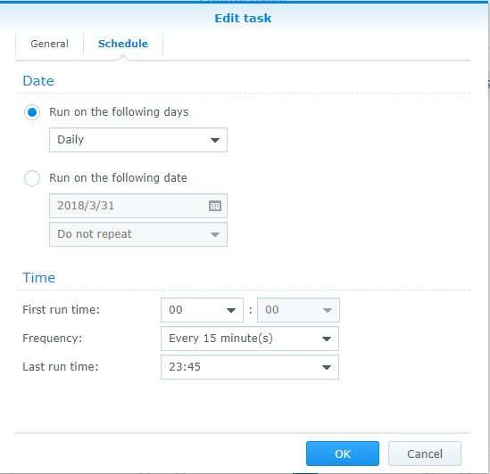
这个教程原理就是通过发POST请求给DNSPOD服务器，然后DNSPOD服务器就能知道你的公网地址，同时将得到的公网地址写入到我们新增的域名解析记录中，从而可以动态刷新IP地址。
现在我们先手动执行以下上面的脚本，linux可以直接再终端执行，window再git bash上执行。如果如果返回执行成功，说明已经成功将公网IP推送域名解析中。
设置路由器转发
手动ping一下域名，看是否能得到你的公网ip。如果可以ping通，那么增加的域名解析记录已经成功。从修改DNS解析记录到该记录同步到DNS服务器，需要一定的同步时间。
再浏览器中登陆群晖，再控制面板中找到外部访问，路由器设置。群晖会启动检测你的路由器型号，并且验证是否具有端口转发的功能。我的路由器是网件的R6400，虽然不在检测中支持的列表里，但是可以兼容。
![set_up_router][set_up_router.png]
勾选要转发的端口，这个可以按需勾选，一般至少打开WEB UI 管理也即5000和5001端口。勾选之后，点击保存，注意这步就覆盖路由器中现有的端口映射规则。点击测试连接。如果配置成功，可以看到测试OK。
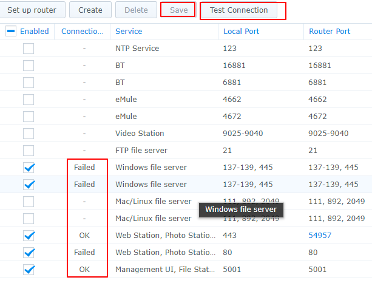
至此，已大功告成。再浏览器中输入域名加端口看看能否访问。没有用过群晖官方的QuickConnect，但是一些朋友使用公网IP来访问之后，都说速度比官方的快不少。通过公网IP在群晖上下载，速度取决于宽带的上行带宽。
安全设置
由于现在已经将群晖暴露在公网之下，所以采取一定的安全措施必不可少。下面简单说一些安全的方法。
https化
默认是直接使用5000端口进行访问的，这种方式是直接使用HTTP连接来访问。在现在这个全站HTTPS化的时代，实现HTTPS访问必不可少。
首先去申请SSL证书，有很多的厂商都提供免费的DV SSL证书，如Let’s Encrypt，TrustAsia等。腾讯云与赛门铁克推出了免费的TrustAsia SSL证书。于是自然我去腾讯云申请SSL证书。同一域名下可以免费申请20个DV SSL证书，而且证书签发很快，从申请到审核通过几分钟就好了。
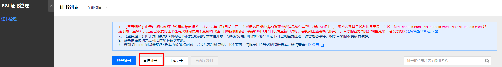
审核通过之后，将证书下载下来解压缩。进入到群晖中的控制面板，安全，证书导入。我们使用Apache目录下的证书。如下图：
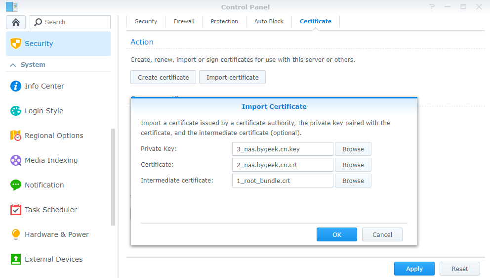
导入之后
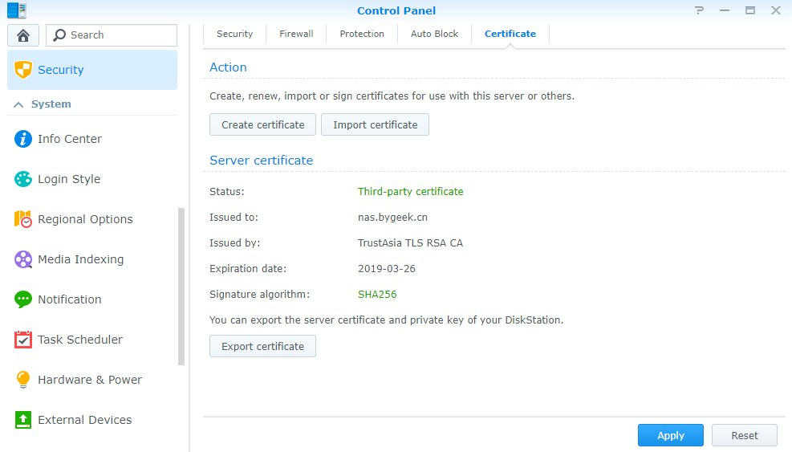
然后再浏览器中使用域名打开。可以看到成功https访问。
关闭SSH连接
安装好的群晖默认是没有启用SSH连接的。如果你不使用ssh来登陆的话，建议关闭SSH登陆。
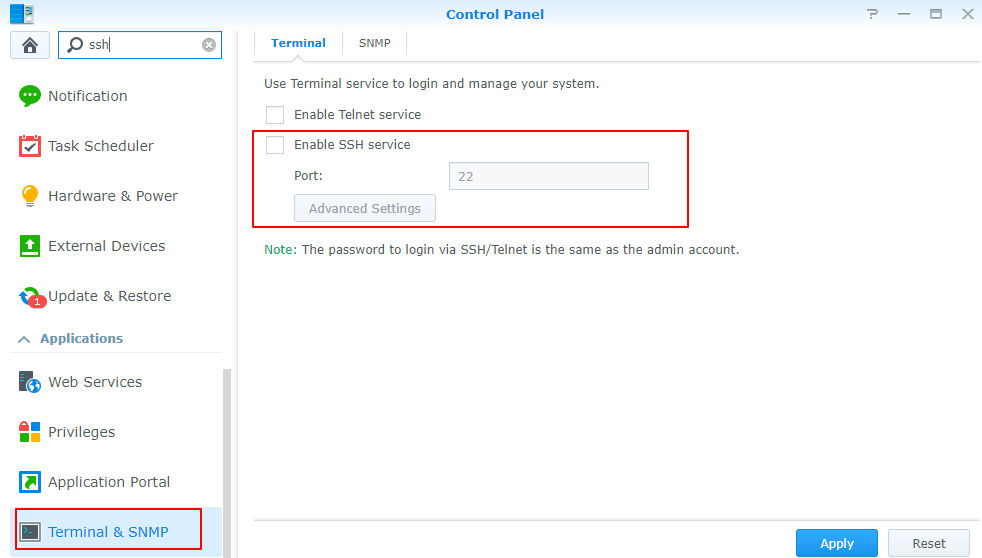
设置独立用户，admin用户二部验证
给admin用户加上二步验证。这样如果使用admin用户登陆，需要输入验证码，提升安全性。同时设置用户组，严格管理每个用户的目录访问权限和读写权限。
初玩nas，必然还有很多的东西等我去发掘。nas作为一个私有云盘，可以方便的进行数据备份，数据管理等，希望以后好好利用。